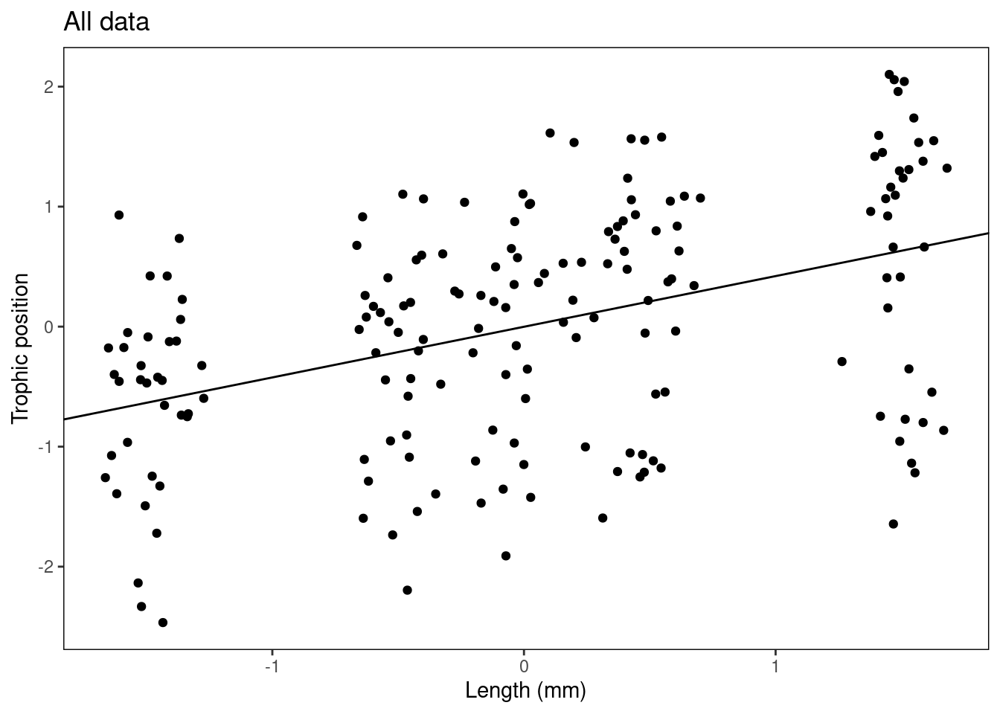

Chapitre 12 Step 4. Interprétation et visualisation
12.1 Interprétation de notre modèle
Regardons de plus près notre modèle final en utilisant la fonction summary(). Comment pouvons-nous interpréter ces informations?
# Maintenant nous sommes prêts pour l'interprétation et la
# visualisation. Regardons de plus près notre modèle final
# en utilisant la fonction `summary()`.
(summ_M8 <- summary(M8))## Linear mixed model fit by REML ['lmerMod']
## Formula: Z_TP ~ Z_Length + (1 + Z_Length | Fish_Species) + (1 | Lake)
## Data: fish.data
##
## REML criterion at convergence: 21.7
##
## Scaled residuals:
## Min 1Q Median 3Q Max
## -2.77187 -0.60166 0.05589 0.64239 2.27776
##
## Random effects:
## Groups Name Variance Std.Dev. Corr
## Lake (Intercept) 0.20504 0.4528
## Fish_Species (Intercept) 0.86715 0.9312
## Z_Length 0.02466 0.1570 1.00
## Residual 0.05039 0.2245
## Number of obs: 180, groups: Lake, 6; Fish_Species, 3
##
## Fixed effects:
## Estimate Std. Error t value
## (Intercept) -0.0009059 0.5687733 -0.002
## Z_Length 0.4222697 0.0922117 4.579
##
## Correlation of Fixed Effects:
## (Intr)
## Z_Length 0.929
## optimizer (nloptwrap) convergence code: 0 (OK)
## boundary (singular) fit: see ?isSingularAllons-y section par section et essayons de comprendre ce que nous regardons.
La sortie est divisée en descriptions des effets aléatoires (ce qui peut varier en fonction de la distribution normale) et les effets fixes (ce que nous estimons comme pour une régression classique) :
Effets aléatoires:Groups: facteurs de regroupementName:(Intercept)pour l’ordonnée à l’origine, ou le nom de la variable sur lequel porte l’effet mixe dans le cas d’une pente aléatoire, (Z_lengthdans notre exemple)Variancela variance estimée de l’effet (Std.Dev.est l’écart type de cette valeur)Corrindique la corrélation entre la pente aléatoire et l’ordonnée à l’origine aléatoire pour un groupement donné (voir cette discussion)
Cette partie présente l’estimation des effets fixes. Une valeur de la statistique T (test de Student) est retournée sans valeur de p (c’est un choix des auteurs du package, voir pourquoi dans cette discussion).
Cette statistique peut être utilisée telle quelle. Vous pouvez aussi calculer l’intervalle de confiance (IC) à 95% avec cette table en utilisant:
\[ IC = Estimate \pm 1.96*Std.Error \]
Si 0 est dans cet interval, alors le paramètre n’est pas significativement différente de zéro au seuil \(\alpha\) = 0.05.
En utilisant notre exemple: Pour déterminer si la pente, et donc l’effet de la longueur sur la position trophique, est significativement différente de zéro, vous devez d’abord calculer l’intervalle de confiance (IC) du paramètre de la pente (estimation pour Z_Length dans la section des effets fixes = 0,4223). CI = l’erreur-type de l’estimation x 1,96 plus ou moins l’estimation du paramètre. Si l’IC inclut zéro, la pente n’est pas significativement différente de zéro au seuil de 0,05.
Quelques fonctions utiles
coef(M8)etranef(M8)retournent les effets aléatoires du modèle M8coef(summary(M8))retourne les effets fixessigma(M8)retourne l’écart type des résidusfitted(M8)retourne les valeurs prédites par le modèleresiduals(M8)retourne les résidus
12.2 Défi 6
1. Quelle est la pente et son intervalle de confiance de la variable Z_Length dans le modèle M8?
2. Est-ce que la pente de Z_Length est significativement différente de 0 ?
Défi 6 Solution:
1. Quelle est la pente et son intervalle de confiance de la variable Z_Length dans le modèle M8?
pente = 0.422;
limite supérieure de l’IC = 0.4223 + 0.09*1.96 = 0.5987
limite inférieure de l’IC = 0.4223 - 0.09*1.96 = 0.2459
2. Est-ce que la pente de Z_Length est significativement différente de 0 ?
- Oui, car l’IC [0.2459, 0.5987] n’inclut pas 0
12.3 Défi 7
Il est possible de visualiser graphiquement les différentes ordonnées à l’origine et pentes du modèle pour mieux interpréter les résultats?
Prenez 2 minutes pour réfléchir aux différentes façons pour représenter les résultats de M8.
Indice: considérez les différents “niveaux” du modèle
Défi 7 Solution:
Il est possible de visualiser graphiquement les différentes ordonnées à l’origine et pentes du modèle pour mieux interpréter les résultats?
Oui! Nous pourrions le faire en générant:
Figure avec toutes les données regroupées
Figure par espèce
Figure par lac
Pour faire ces figures, il nous faut (1) les coefficients du modèle complet qui sont dans le résumé du modèle, (2) les coefficients pour chaque niveau du modèle qu’on obtient avec la fonction coef.
# Défi 7 : *Il est possible de visualiser graphiquement les
# différentes ordonnées à l'origine et pentes du modèle pour
# mieux interpréter les résultats ?
# Solution du défi 7 : Oui ! Nous pourrions le faire en
# générant les figures suivantes. a) Figure avec toutes les
# données regroupées b) Figure par espèce c) Figure par lac
# Pour produire ces figures, nous avons d'abord besoin des
# coefficients du modèle complet qui se trouvent dans le
# résumé du modèle.
summ_M8$coefficients## Estimate Std. Error t value
## (Intercept) -0.0009058974 0.56877327 -0.001592722
## Z_Length 0.4222697238 0.09221166 4.579352788# Intercept = Intercept = 9.0589745 × 10^4 Slope = 0.4222697
# Nous avons également besoin des coefficients pour chaque
# niveau du modèle, qui peuvent être obtenus avec la fonction
# `coef`.
coef(M8)## $Lake
## (Intercept) Z_Length
## L1 -0.085984071 0.4222697
## L2 0.002205209 0.4222697
## L3 -0.301816557 0.4222697
## L4 -0.574039728 0.4222697
## L5 0.218650140 0.4222697
## L6 0.735549622 0.4222697
##
## $Fish_Species
## (Intercept) Z_Length
## S1 -1.0752985 0.2410746
## S2 0.5597871 0.5168300
## S3 0.5127938 0.5089046
##
## attr(,"class")
## [1] "coef.mer"Maintenant, faisons nos figures!
- Figure avec toutes les données regroupées
# Maintenant, faisons nos figures !
# a) Figure avec toutes les données groupées Créez un thème
# ggplot simplifié
fig <- theme_bw() + theme(panel.grid.minor = element_blank(),
panel.grid.major = element_blank(), panel.background = element_blank()) +
theme(strip.background = element_blank(), strip.text.y = element_text()) +
theme(legend.background = element_blank()) + theme(legend.key = element_blank()) +
theme(panel.border = element_rect(colour = "black", fill = NA))
plot <- ggplot(aes(Z_Length, Z_TP), data = fish.data)
Plot_AllData <- plot + geom_point() + xlab("Length (mm)") + ylab("Trophic position") +
labs(title = "All data") + fig
Plot_AllData + geom_abline(intercept = summ_M8$coefficients[1,
1], slope = summ_M8$coefficients[2, 1])
# Vous pouvez également écrire les chiffres comme ceci :
# Plot_AllData + geom_abline(intercept = -0.0009059, slope =
# 0.4222697)- Figure par espèce
# b) Figure par espèce Mettre les coefs dans un tableau pour
# les rendre plus faciles à manipuler
Lake.coef <- coef(M8)$Lake
colnames(Lake.coef) <- c("Intercept", "Slope")
Species.coef <- coef(M8)$Fish_Species
colnames(Species.coef) <- c("Intercept", "Slope")
Plot_BySpecies <- plot + geom_point(aes(colour = factor(Fish_Species)),
size = 4) + xlab("Longueur (mm)") + ylab("Position trophique") +
labs(title = "Par espèce") + fig
# Ajoutez les lignes de régression pour chaque espèce
Plot_BySpecies + geom_abline(intercept = Species.coef[1, 1],
slope = Species.coef[1, 2], col = "coral2") + geom_abline(intercept = Species.coef[2,
1], slope = Species.coef[2, 2], col = "green4") + geom_abline(intercept = Species.coef[3,
1], slope = Species.coef[3, 2], col = "blue1")
- Figure par lac
# c) Figure par lac
Plot_ByLake <- plot + geom_point(aes(colour = factor(Lake)),
size = 4) + xlab("Length (mm)") + ylab("Trophic Position") +
labs(title = "By Lake") + fig
# Ajouter les lignes de régression avec les ordonnées à
# l'origine spécifiques à chaque lac
Plot_ByLake + geom_abline(intercept = Lake.coef[1, 1], slope = Lake.coef[1,
2], col = "coral2") + geom_abline(intercept = Lake.coef[2,
1], slope = Lake.coef[2, 2], col = "khaki4") + geom_abline(intercept = Lake.coef[3,
1], slope = Lake.coef[3, 2], col = "green4") + geom_abline(intercept = Lake.coef[4,
1], slope = Lake.coef[4, 2], col = "darkgoldenrod") + geom_abline(intercept = Lake.coef[5,
1], slope = Lake.coef[5, 2], col = "royalblue1") + geom_abline(intercept = Lake.coef[6,
1], slope = Lake.coef[6, 2], col = "magenta3")
12.4 Défi 8
Vérifions nos connaissances en envisageant un autre scénario.
Vous avez inventorié la richesse dans 1000 quadrats qui sont dans 10 sites différents qui sont également dans 10 forêts différentes. Vous avez de plus mesuré la productivité dans chaque quadrat.
Vous désirez savoir si la productivité est un bon prédicteur de biodiversité. Quel modèle mixte pourriez-vous utiliser pour ce jeu de données?
Défi 8 Solution:
Ici les effets aléatoires sont nichés (i.e. Sites dans forêt) et non croisés.
Pourquoi utiliser (1 | Foret / Site) plutôt que (1 | Foret) + (1 | Site) ?
Regardez cette réponse!